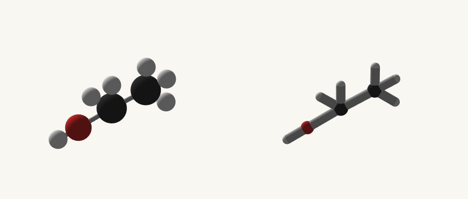
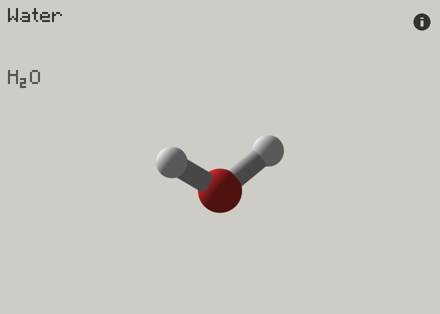

Avogadro guide · Minecraft 1.12.2 / Cleanroom
Draw a molecule in your own screen
Show a registered molecule inside a rectangle in your own Minecraft screen. Supply the
structure, rectangle, camera, and drawing options to
AvogadroClientApi.render from the screen’s drawing callback. The examples start
with water and then add camera controls and separate styles.
Java imports
import io.github.wurtzitane.avogadro.api.*;
import io.github.wurtzitane.avogadro.molecule.*;
// Client code only:
import io.github.wurtzitane.avogadro.api.client.*;
import io.github.wurtzitane.avogadro.client.export.*;
import java.util.List;
import java.util.Map;
import net.minecraft.client.Minecraft;
import net.minecraftforge.fluids.FluidStack;
Draw a loaded molecule in your screen
Call this method from your screen’s drawing function, passing water’s loaded structure or another finite model. It draws the complete structure centered in the supplied rectangle. Dimensions are Minecraft GUI coordinates, which may differ from physical monitor pixels.
Java · add this method to your class.
public static void drawStill(MoleculeStructure structure, int x, int y) {
var options = MoleculeRenderOptions.builder()
.orientation(25,
20,
0)
.rotationSpeed(0)
.build();
AvogadroClientApi.render(structure, x, y, 240, 180, options, 0);
}
Groovy · same API; place methods in your script or client helper as described.
static void drawStill(MoleculeStructure structure, int x, int y) {
def options = MoleculeRenderOptions.builder()
.orientation(25,
20,
0)
.rotationSpeed(0)
.build();
AvogadroClientApi.render(structure, x, y, 240, 180, options, 0);
}
Pass definition. from the client view. The structure must
already be available; a registered definition is not required for finite custom geometry.
Use GUI pixels, as reported by the current screen, rather than raw framebuffer dimensions.
Adjust the camera, atom sizes, and bond sizes
Java · add this method to your class.
public static MoleculeRenderOptions style() {
return MoleculeRenderOptions.builder()
.orientation(25, 20, 0)
.pan(0, 0)
.zoom(1)
.background(0xfff8f7f2)
.atomScale(1.15f)
.bondScale(.7f)
.palette(Map.of("O", 0xe45b55))
.rotationSpeed(30)
.build();
}
Groovy · same API; place methods in your script or client helper as described.
static MoleculeRenderOptions style() {
return MoleculeRenderOptions.builder()
.orientation(25, 20, 0)
.pan(0, 0)
.zoom(1)
.background(0xfff8f7f2)
.atomScale(1.15f)
.bondScale(.7f)
.palette(Map.of("O", 0xe45b55))
.rotationSpeed(30)
.build();
}
Java · add this method to your class.
public static void draw(MoleculeStructure structure, double elapsedSeconds) {
// Call from GuiScreen.drawScreen, with GUI pixel coordinates.
AvogadroClientApi.render(structure, 20, 40, 320, 220, style(), elapsedSeconds);
}
Groovy · same API; place methods in your script or client helper as described.
static void draw(MoleculeStructure structure, double elapsedSeconds) {
// Call from GuiScreen.drawScreen, with GUI pixel coordinates.
AvogadroClientApi.render(structure, 20, 40, 320, 220, style(), elapsedSeconds);
}
| Option | Units / default | Practical use |
|---|---|---|
| orientation(yaw,pitch,roll) | Degrees; zero when omitted | Choose an initial view |
| pan(x,y) | GUI pixels; 0,0 | Move the model within its viewport |
| zoom(value) | Positive multiplier; 1 | 1 fits; larger numbers zoom in |
| background(argb) | Nullable ARGB; null leaves existing background | Use alpha FF for an opaque panel |
| atomScale / bondScale | Positive multipliers; 1 / 1 | Emphasize atoms or thin bonds |
| palette(map) | Element → RGB override | Color only this draw; other views remain independent |
| rotationSpeed(value) | Degrees per second; 0 | 0 stays still; pass elapsed seconds for rotation |
| cubic(true) | Default follows appearance preference | Use cube-shaped atom geometry |
0xfff8f7f2. Export
background is RGB, such as 0xf8f7f2. Mixing them up can produce an unintended
transparent viewport.
Keep titles and formulas readable
Avogadro draws the selected Minecraft bitmap letters as pixel shapes, without smoothing or fractional stroke widths. Small chemical numbers use fixed pixel patterns: subscripts sit lower, digits inside a count stay close, and extra space separates the count from the next element. The shared font adapter measures the same advances it draws.
Pixel-font label scales snap to whole framebuffer pixels. When centering your own labels,
use
Molecule
for both measurement and drawing. Custom item fonts keep their own renderer; other
resource-pack formats and extended characters use the existing font fallback.
Show two styles at once
Java · add this method to your class.
public static void compareStyles(MoleculeStructure structure) {
var large = MoleculeRenderOptions.builder()
.atomScale(1.6f)
.bondScale(.6f)
.build();
var fine = MoleculeRenderOptions.builder()
.atomScale(.8f)
.bondScale(1.2f)
.build();
AvogadroClientApi.render(structure, 10, 30, 220, 180, large, 0);
AvogadroClientApi.render(structure, 240, 30, 220, 180, fine, 0);
}
Groovy · same API; place methods in your script or client helper as described.
static void compareStyles(MoleculeStructure structure) {
def large = MoleculeRenderOptions.builder()
.atomScale(1.6f)
.bondScale(.6f)
.build();
def fine = MoleculeRenderOptions.builder()
.atomScale(.8f)
.bondScale(1.2f)
.build();
AvogadroClientApi.render(structure, 10, 30, 220, 180, large, 0);
AvogadroClientApi.render(structure, 240, 30, 220, 180, fine, 0);
}


Options affect only the requested draw. The renderer clips the background and model to the supplied rectangle and restores the caller’s graphics state. Geometry styles belong in geometry cache identities; camera angles and time do not. Avogadro bypasses cached animation frames when they cannot represent the requested options.
Dropped molecule items stay upright by default. Under Appearance, set Dropped molecule item tilt for a fixed angle, or enable Random dropped item tilt and choose its minimum and maximum. Each dropped stack keeps its chosen angle. Held items and item frames keep their normal pose.
Smooth enlarged previews
Open Mod Options → Avogadro → Appearance to adjust model quality. Larger previews use finer cached sphere and bond meshes; small previews use fewer segments. Every atom and bond remains present. Where inspection data is supplied, zooming still reveals nuclei, electrons, and orbit paths.
| Setting | Default | What to change |
|---|---|---|
| Minimum mesh detail | 16 | Raise the minimum to use smoother shapes even in small previews. |
| Maximum mesh detail | 64 | Raise to 128 for the smoothest enlarged atom/bond joins and media exports. |
| Mesh edge tolerance (pixels) | 0.25 | Lower it to choose finer meshes sooner as you zoom in. |
| Preview antialiasing | On | Smooth pixel stair-stepping on molecule and atomic views. Turn it off to reduce graphics work. |
| Antialiasing samples | 4 | Choose 2, 4, or 8. Your graphics hardware and available render-target memory may limit the sample count. |
Mesh detail uses tiers of 8, 16, 32, 64, and 128; intermediate values round down. The maximum takes precedence if it is lower than the minimum. Finer meshes take more memory and graphics work. Antialiasing uses a separate target and falls back to ordinary rendering when unsupported. Previews smaller than 96 framebuffer pixels keep the ordinary path.
For consistent maximum quality, set both detail limits to 128 and antialiasing to 8 samples. These settings change shape smoothness, not image width or height. Exports keep their chosen detail and sample count for the entire job.
Add camera controls without changing the model
| Input / state | Implementation advice |
|---|---|
| Drag to rotate | Store yaw/pitch in your screen; rebuild options after input |
| Drag to pan | Store pixel offsets per viewport |
| Scroll to zoom | Clamp a positive zoom value to your preferred range |
| Pause | Stop advancing elapsed time; keep the last successful geometry |
| Reset | Reset your screen’s camera values; do not edit atom coordinates |
| HEI built-in controls | Left drag rotates, right drag pans, wheel zooms, middle click resets |
Create options when settings change instead of allocating them for every draw. Calculate elapsed time from a monotonic start time. The same geometry/options/time produce the same rotation; do not supply absolute wall-clock seconds if you want easy replay.
Show the right molecule in a fluid tooltip
Java · add this method to your class.
public static void fluidTooltip(FluidStack contents, Runnable drawTooltip) {
// Use when your integration draws an ordinary tooltip for these contents.
AvogadroClientApi.withFluidTooltip(contents, drawTooltip);
}
Groovy · same API; place methods in your script or client helper as described.
static void fluidTooltip(FluidStack contents, Runnable drawTooltip) {
// Use when your integration draws an ordinary tooltip for these contents.
AvogadroClientApi.withFluidTooltip(contents, drawTooltip);
}
Pass the full stack so NBT-qualified associations remain available. Run the ordinary tooltip draw inside the callback. This supplies context for the integration; it is not a second molecule registration.
Keep client code out of server entry points
Put screen, Minecraft, renderer, and export references in client-only classes/proxies. Common registration and geometry APIs can run on a dedicated server. A rendering call requires a live OpenGL context; do not call it from a worker thread or resource parser.
Readable HEI molecule cards
The default card places the name beside the associated item and the formula underneath. The model stays centered in the card. Names and formulas wrap at their chosen size. Long text never shrinks to fit or acquires ellipses. Hover and scroll over either text area to reach additional rows; its tooltip also contains the complete text. Scroll over the model to zoom as usual.
Turn off Show item slots under Recipe browser to remove the item and its slot. The title moves left and the formula moves up. Cards without a matching item use this layout automatically; item and fluid lookups still find the molecule.
For one molecule, call heiItemSlot(false) on its Java, Kotlin, Scala,
GroovyScript, or CraftTweaker builder. In JSON, set
"presentation": { "hei_item_slot": false }. An explicit
value overrides the global preference; omit it to use that preference.
true shows a slot only when an associated item exists.
| Control | Default | Range |
|---|---|---|
| Show item slots | On | On / Off; definitions can override it |
| Card width | 220 GUI pixels | 180–300 |
| Model preview height | 88 GUI pixels | 48–128 |
| Visible name lines | 3 | 1–4 |
| Visible formula lines | 2 | 1–4 |
| Name text size / Formula text size | 1× each | 1–1.5× independently |
Save the settings and reopen HEI to refresh its native paging. These text sizes are independent of the general Appearance text size. With the native nine-pixel font and sufficient space, the default card is 220 × 157 GUI pixels. HEI's outer panel expands with molecule cards and returns to its ordinary width for other categories. Small screens temporarily reduce the model area and visible text rows to fit; text keeps its chosen size and all remaining rows stay scrollable. Saved preferences and custom font metrics are preserved. The model's fit, zoom pivot, help icon and input bounds follow the chosen layout; changing the layout does not edit the molecule.

Reopen models faster
Open Mod Options → Avogadro → UI caching. Completed inspection data, nucleus layouts, chain/network previews, and model-space buffers can be reused after their first preparation. A warm memory hit skips the preparation queue. Keeping geometry on disk also skips mesh construction after restarting Minecraft; reading it and uploading it to the GPU can still take time.
Turn on Preload molecule models to prepare the whole current catalog before opening model menus, including on the first launch. A loading screen stays open until the complete models and compact atom previews are ready. Models remain in GPU memory, so changing tabs does not evict the models in another tab. This takes more loading time and memory.
Preload memory defaults to 512 MiB. Inspection data also uses the preview memory limit. If the catalog cannot be prepared within these limits, loading stops and offers Continue with on-demand rendering. Definitions, colors, and quality changes prepare the catalog again. New chain lengths, crystal sizes, network parameters, and custom render styles still need their own preparation.
| Setting | Default | What it controls |
|---|---|---|
| Reuse prepared UI models | On | Retain completed preparation. A live draw still needs temporary render buffers when this is off. |
| Preview memory limit | 128 MiB | Shared completed CPU results. Least recently used entries leave first. Active viewers and the bounded crystal/GPU caches have separate working storage. |
| Maximum cached entries | 256 | Limit completed memory results and saved geometry files even when individual models are small. |
| Keep geometry between game sessions | On |
Cache prepared geometry under cache/ inside this
Minecraft instance.
|
| Geometry disk limit | 256 MiB | Remove least recently used geometry files when the disk budget is reached. |
| Clear when leaving / loading a world | Both off | Independent switches to clear retained CPU results and saved geometry on client-world events, including dimension changes. |
| Clear when closing / starting Minecraft | Both off | Independent switches to delete disk geometry. A forced stop can skip shutdown cleanup; startup cleanup handles files left after it. |
For reuse throughout one game session, enable Clear when starting Minecraft and leave both world switches off. For reuse across restarts, keep all four clear switches off. For world-only reuse, enable Clear when leaving a world. Memory always disappears when the process exits.
Cached geometry does not register a molecule or carry server associations, cameras, or GPU handles. Changed positions, bonds, colors, styles, and seeded-network requests cannot reuse the wrong result. Invalid files are discarded and rebuilt. Exports continue to use the selected exact geometry.
World HUD panels
Enable Show World HUD Molecules under Mod Options → Avogadro → World HUD to add a molecule preview to the selected HUD provider. Its normal item name, icon and other details remain intact. Avogadro uses one native HUD and does not add a second panel beneath fluids.
TOP:CE controls the HUD animation through its own settings. The molecule is measured with the other contents and grows within the native animated bounds; Avogadro does not replace the HUD, its border or its opening and closing animations.
Allow TOP:CE header centering lets the native item icon and names move right when other rows are wider. It is off by default and hidden with other TOP implementations. HWYLA and Smeagle also retain their normal single-HUD layout.
Draw water inside a rectangle in your screen
Look up water in the client’s loaded definitions and draw its structure in the rectangle shown below. Call this from your screen’s drawing function on the client render thread. Supply elapsed animation time yourself; the library clips the model to that rectangle and restores the previous graphics state afterward.
import io.github.wurtzitane.avogadro.api.client.*;
public class WaterPresentation {
public static void drawWater() {
var definition = AvogadroClientApi.view()
.get("my_mod:water");
if (definition != null) AvogadroClientApi.render(definition.structure(),
12,
40,
240,
180,
MoleculeRenderOptions.builder()
.zoom(1.2f)
.build(), 0.0);
}
}
import io.github.wurtzitane.avogadro.api.client.*
import io.github.wurtzitane.avogadro.kotlin.AvogadroClient
fun drawWater() {
val definition = AvogadroClientApi.view()
.get("my_mod:water")
if (definition != null) AvogadroClient.render(definition.structure(),
12,
40,
240,
180,
MoleculeRenderOptions.builder()
.zoom(1.2f)
.build(), 0.0)
}
import io.github.wurtzitane.avogadro.api.client.*
def definition = AvogadroClientApi.view()
.get('my_pack:water')
if (definition != null) AvogadroClientApi.render(definition.structure(),
12,
40,
240,
180,
MoleculeRenderOptions.builder()
.zoom(1.2f)
.build(), 0d)
import io.github.wurtzitane.avogadro.api.client.*
import io.github.wurtzitane.avogadro.scala.AvogadroClient
object WaterPresentation {
def drawWater(): Unit = {
val definition = AvogadroClientApi.view()
.get("my_mod:water")
if definition != null then AvogadroClient.render(definition.structure(),
12,
40,
240,
180,
MoleculeRenderOptions.builder()
.zoom(1.2f)
.build(), 0.0)
}
}
// Inside an actual client render event; molecule must exist in the client view:
import mods.avogadro.Client;
Client.renderZoomed("my_pack:water", 12, 40, 240, 180, 1.2, 0.0);
Render options also expose camera orientation, pan, atom/bond scales, palettes, backgrounds and rotation speed. They affect only presentation. Keep client imports out of common/server classes. CPU geometry preparation, GPU lifetime and clipping stay with the existing renderer.
Calls used in the examples
| Call or setting | Arguments | What it does |
|---|---|---|
render(structure, x, y, width, height, options, time)
|
Loaded structure; GUI rectangle; display options; animation time | Draw inside the requested screen region on the client render thread. |
orientation(x, y, z)
|
Rotation angles | Choose the initial camera orientation. |
rotationSpeed(value)
|
Rotation speed | Use zero for a stationary model, as in the still-image example. |
build()
|
No arguments | Finish the render options before drawing. |
When you finish: A drawing call does not register or modify the model. The render-options value needs no close call. If you create a separate viewer or detached window, retain its handle and close it when the tool finishes; keep any caller-owned graphics resources within their own lifecycle.